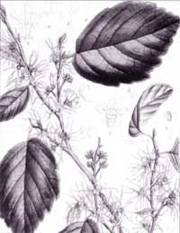
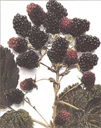

Issue #133 - August/September 1992
HERBALIST'S NOTEBOOK
A seasonal guide to medicinal herbs
I have always used witch hazel as a simple astringent for cuts and scratches. I also offer it to teenagers (and others) who have mild acne. To cleanse, all you have to do is apply a bit of witch hazel wash on a cotton ball and sweep it around your face. It should leave a pleasant tingling sensation. Do this a few times a day, and you should see your face clear up. Applying the wash to your face also makes for a fast, easy refresher on August's hot and sticky days.
Description: Witch hazel is a small tree or shrub, which favors damp woods and may be found along some roadsides that border forest areas. It is unique because its yellow blossoms appear during the fall - just as the leaves are being shed. It can frequently be found with its bare branches decorated by spidery yellow blossoms. The flower is composed of four long, thin, scraggly-appearing petals that sprout from a four-lobed yellow calyx. Blossoms are one inch wide and may be found along bare twigs in autumn and into winter.
Witch Hazel leaves are dark green on top and paler underneath. They are egg-shaped or oval, with wavy, toothed edges and distinct, straight, vein patterns. The younger leaves may be somewhat downy. A distinctive feature of the leaf is its uneven base, with one side shorter than the other. The leaves, which are up to five inches long (and about half as wide), usually turn yellow during the fall.
Witch hazel fruit is a hard, roundish capsule that contains shiny black seeds. The capsule splits when mature, and the sides fold back into four, sharply curved points. Seeds are flung through the air with an audible popping sound. Empty seed capsules may be found on the branches into winter, along with the withered remains of the yellow blossoms.
Medicinal Uses: Witch hazel leaves, twigs, and bark are used for their astringent, soothing, and hemostatic (the control of minor bleeding) properties, attributes which make it useful for treating minor wounds, scratches, and insect bites. First, it helps reduce inflammation and tone injured tissue, speeding up the healing process. A simple washing can reduce or control a mild poison ivy reaction, and can also offer some relief for the pain and inflammation of sunburns. Witch hazel can be used additionally as a poultice over the closed lids to relieve tired, irritated eyes, and to reduce various symptoms which are brought on by eyestrain.
A quick wash of witch hazel has also been used for centuries as an external application for cosmetic purposes. It's astringency is wonderful for toning the skin. It will fight pimples and blackheads by cleansing and closing pores. It also acts as an antiseptic, helping to prevent infection of skin eruptions. Witch hazel is an old-time external application for varicose vein flare-ups, and as a salve, it can reduce the symptoms of hemorrhoids. In this case, its hemostatic action helps lessen bleeding and its astringency works to tighten tissues.
Harvesting:<.strong> The leaves and small branches of witch hazel are gathered during the growing season, from spring through early fall. Pluck individual leaves from the tree or cut small, leaf-bearing branches. Then spread individual leaves to dry on screens, paper bags, or baskets, and store when leaves are crumbly. Bundle the twigs at the stem base, and hang upside down to dry.
To use witch hazel bark, strip in small patches from the tree during early spring when the leaves are just sprouting. Avoid stripping the bark around the tree's trunk in a complete circle. Spread out the pieces of bark, cut when fully dry, and store for later use.
Dosage: To relieve mild diarrhea, make a mild tea of witch hazel using one teaspoon of dried leaves, twigs, or bark to one cup of boiling water. Allow the tea to sit for 10 to 15 minutes, and drink three times daily.
For external use, make a strong tea of dried plant parts, and pat on injured skin several times a day. Or pour the strong tea over a cloth, and apply directly to the injured or affected skin. Repeat this treatment several times daily. For irritated or tired eyes, use a compress soaked in strong witch hazel tea and apply to closed lids for 10 to 15 minutes. Repeat several times daily if necessary. For a variety of skin wounds and irritations, insect bites and hemorrhoids, witch hazel can be added to salves and applied several times a day.
Picking blackberries can be quite a challenge. Tall ferns stand like green, frilly fans, and woven over and around them are tough blackberry vines. The stems are red and full of nasty thorns that seem to grab skin and clothing. Still, the sweet berries and the medicinal leaves and bark make the tricky picking worth your while.
Description: Of the numerous blackberry species in the Northeast, the one most likely to be found is the common blackberry, Rubus allegheniensis. This prickly-stemmed plant is actually a member of the rose family (as attested to by its thorns). Blackberry species, which grow in dry thickets and clearings, form thick, thorny hedges. They are known for their hardiness and are often one of the first plants to reclaim disturbed soil.
The leaves are alternate and divided into three or five sharply toothed leaflets. Small, sharp thorns grow on the undersurface of the leaves and along the stems. The white flowers have five petals, which are longer than sepals. The blossoms are about one inch wide. Common blackberry flowers grow only in spring and summer, but other species bloom through fall. The plant can reach up to eight feet.
The fruit is a shiny, edible, black berry that contains seeds. It is sweet and juicy in some species, astringent in others. The common blackberry is usually sweet, especially in moist years. All of the blackberry species can be used interchangeably for medicinal purposes.
Medicinal Uses: Blackberry's primary medicinal property is its sharp and strong astringency, which makes it a useful remedy for simple diarrhea - it helps reduce both inflammation and tone irritated membranes. Blackberry's astringency also makes it a useful gargle for red and swollen throats. Some even use it to cure mouth sores.
Harvesting: The fruit can be gathered when fully ripe and then dried to use as a tea. To dry, spread berries one layer thick on a screen or cookie sheet and cook slowly in the oven at very low temperatures. To make a syrup, the juice is extracted from fresh berries and simmered with honey over a low flame.
Leaves can be harvested any time as long as they are green and healthy looking. Spread them out to dry - (taking care to avoid thorns!) - and store for later use. The root can be gathered either before flowers appear in the spring or in late fall. Cut the roots from the plant, rinse well, and peel the root bark away. Then cut the root bark into thin strips and spread to dry on screens. Store when thoroughly dry.
Dosages: For tea, use one to two teaspoons of the dried leaves or berries to one cup of boiling water and allow to steep briefly. Drink three times daily. If using the root bark, place one to two teaspoons of dried bark into two cups of water, and simmer on low heat for about 10 minutes. Use 1/2 cup of this mixture three to four times daily. Syrup can be taken three times daily, using 1/2 to one teaspoon per dose.
Editor's note: Corinne Martin, a graduate of the Institute of Traditional Herbal Medicine in Santa Fe, NM, is a certified clinical herbalist who has studied plants for over a decade. This passage is from her book Earthmagic: Finding and Using Medicinal Herbs (The Countryman Press, P .O. Box 175, Woodstock, VT 05091; 800/245-4151)
|
 Witch Hazel:A powerful natural medicine for a variety of skin irritations. |
 Blackberries:A natural remedy for diarrhea and sore throats. |
|